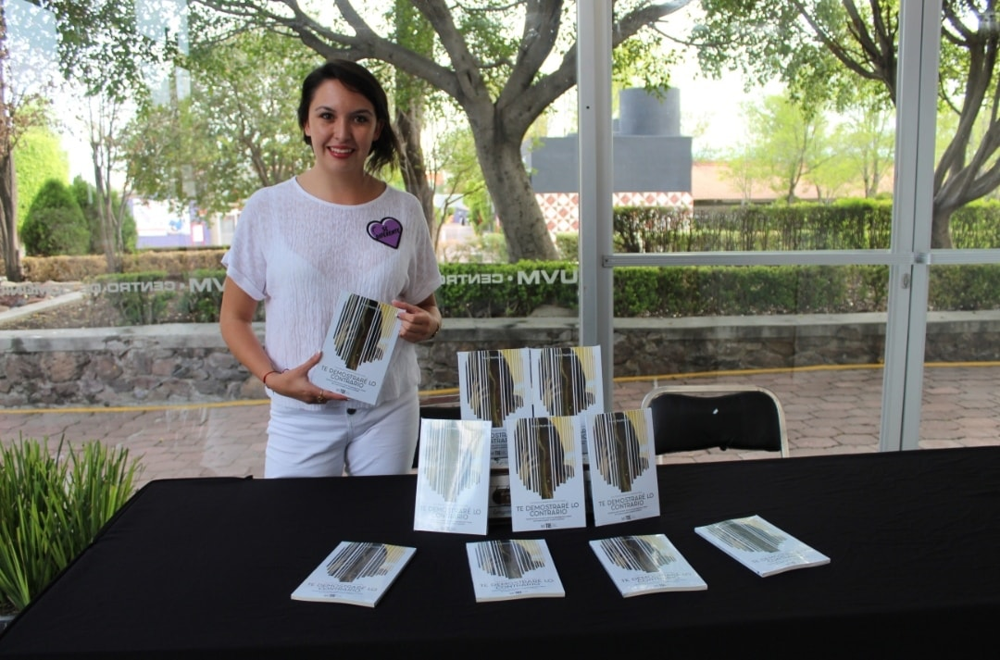

El dolor es natural pero el
sufrimiento es opcional
Creci entre el caos de los trastornos mentales, la enfermedad y el abandono. Vi como la mente puede destruir... o convertirse en su mejor aliada.
De esa oscuridad nacio mi proposito
Transforme el dolor en ciencia (investigando sobre el cerebro y el corazon), arte (con obras de teatro, libros y mas) y estrategia (cursos con ejercicios practicos) para poder replicar lo que aprendi e impactar a mas personas.
Hoy soy fundadora del Club de Comunicacion y Liderazgo, autora de "Te Demostrare lo Contrario", conferencista y creadora de programas que enseñan a las personas a comunicarse con confianza, sanar su historia y convertir su mente en su mejor herramienta para crecer.
Mi vision es construir una generacion mas consciente:
Personas que entiendan su mente, comuniquen con poder y vivan de lo que aman
He dedicado mi vida a demostrar que el pasado no te define, te entrena
Y que cuando dominas tu historia, nada ni nadie puede detenerte
Este libro nace de la experiencia y como se puede transformar el dolor en un proposito mayor.
Aprende como tener amor propio, teniendo las claves de la motivacion y apalancate del miedo,
puedes hacer de tu pasion una realidad.
Escribo como las experiencias que vivi con mis papas y mi abuelita me ayudaron a ser consciente
y transformaron odio en amor.
